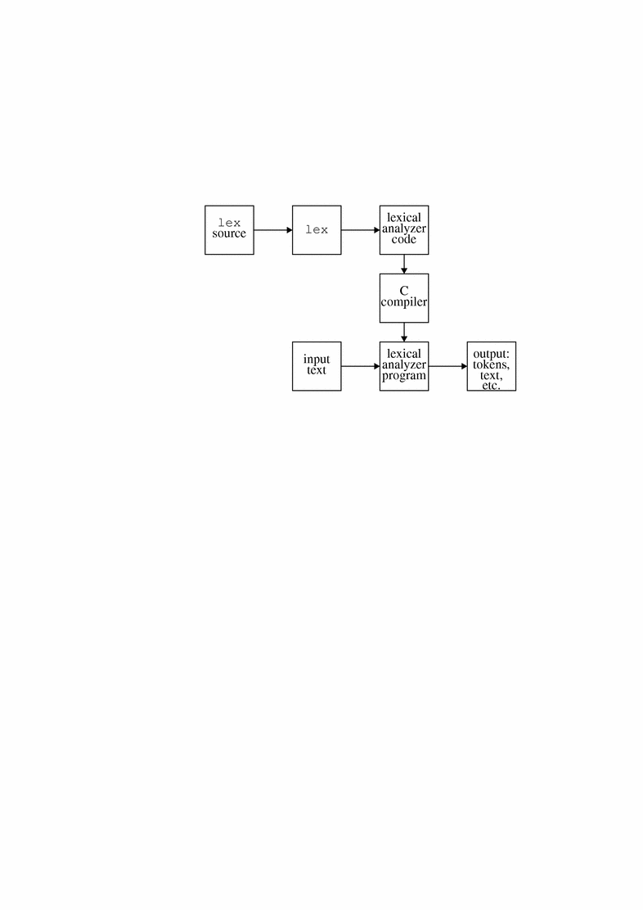

Chapter 2 Lexical Analysis
With the lex(1) software tool, you can solve problems from text processing, code enciphering, and compiler writing. In text processing, you might check the spelling of words for errors; in code enciphering, you might translate certain patterns of characters into others; and in compiler writing, you might determine what the tokens (smallest meaningful sequences of characters) are in the program to be compiled.
The task common to all these problems is lexical analysis: recognizing different strings of characters that satisfy certain characteristics. Hence the name lex. You don't have to use lex to handle problems of this kind. You could write programs in a standard language like C to handle them. In fact, what lex does is produce such C programs: lex is therefore called a program generator.
What lex offers you is typically a faster, easier way to create programs that perform these tasks. Its weakness is that it often produces C programs that are longer than necessary for the task at hand and that execute more slowly than they otherwise might. In many applications this is a minor consideration, and the advantages of using lex considerably outweigh it.
lex can also be used to collect statistical data on features of an input text, such as character count, word length, number of occurrences of a word, and so forth. The remaining sections of this chapter include:
-
Generating a lexical analyzer program
-
Writing lex source
-
Translating lex source
-
C++ Mangled Symbols
-
Using lex and yacc Together
-
Automaton
-
Summary of Source Format
Internationalization
For information about using lex to develop applications in languages other than English, see lex (1).
Generating a Lexical Analyzer Program
lex generates a C-language scanner from a source specification that you write. This specification contains a list of rules indicating sequences of characters -- expressions -- to be searched for in an input text, and the actions to take when an expression is found. To see how to write a lex specification see the section "Writing lex Source ".
The C source code for the lexical analyzer is generated when you enter
$ lex lex.l
where lex.l is the file containing your lex specification. (The name lex.l is conventionally the favorite, but you can use whatever name you want. Keep in mind, though, that the .l suffix is a convention recognized by other system tools, make in particular.) The source code is written to an output file called lex.yy.c by default. That file contains the definition of a function called yylex() that returns 1 whenever an expression you have specified is found in the input text, 0 when end of file is encountered. Each call to yylex() parses one token (assuming a return); when yylex() is called again, it picks up where it left off.
Note that running lex on a specification that is spread across several files, as in the following example, produces one lex.yy.c:
$ lex lex1.l lex2.l lex3.l
Invoking lex with the -t option causes it to write its output to stdout rather than lex.yy.c, so that it can be redirected:
$ lex -t lex.l > lex.c
Options to lex must appear between the command name and the filename argument.
The lexical analyzer code stored in lex.yy.c (or the .c file to which it was redirected) must be compiled to generate the executable object program, or scanner, that performs the lexical analysis of an input text.
The lex library supplies a default main() that calls the function yylex(), so you need not supply your own main(). The library is accessed by invoking the -ll option to cc:
$ cc lex.yy.c -ll
Alternatively, you might want to write your own driver. The following is similar to the library version:
extern int yylex();
int yywrap()
{
return(1);
}
main()
{
while (yylex());
;
}
For more information about the function yywrap(), see the "Writing lex Source " section. When your driver file is compiled with lex.yy.c, as in the following example, its main() will call yylex() at run time exactly as if the lex library had been loaded:
$ cc lex.yy.c driver.c
The resulting executable file reads stdin and writes its output to stdout. Figure 2-1 shows how lex works.
Figure 2-1 Creation and Use of a Lexical Analyzer with lex

Writing lex Source
lex source consists of at most three sections: definitions, rules, and user-defined routines. The rules section is mandatory. Sections for definitions and user routines are optional, but must appear in the indicated order if present:
definitions %% rules %% user routines
The Fundamentals of lex Rules
The mandatory rules section opens with the delimiter %%. If a routines section follows, another %% delimiter ends the rules section. The %% delimiters must be entered at the beginning of a line, that is, without leading blanks. If there is no second delimiter, the rules section is presumed to continue to the end of the program.
Lines in the rules section that begin with white space and that appear before the first rule are copied to the beginning of the function yylex(), immediately after the first brace. You might use this feature to declare local variables for yylex().
Each rule specifies the pattern sought and the actions to take on finding it. The pattern specification must be entered at the beginning of a line. The scanner writes input that does not match a pattern directly to the output file. So the simplest lexical analyzer program is just the beginning rules delimiter, %%. It writes out the entire input to the output with no changes at all.
Regular Expressions
You specify the patterns you are interested in with a notation called a regular expression. A regular expression is formed by stringing together characters with or without operators. The simplest regular expressions are strings of text characters with no operators at all:
apple orange pluto
These three regular expressions match any occurrences of those character strings in an input text. To have the scanner remove every occurrence of orange from the input text, you could specify the rule
orange ;
Because you specified a null action on the right with the semicolon, the scanner does nothing but print the original input text with every occurrence of this regular expression removed, that is, without any occurrence of the string orange at all.
Operators
Unlike orange, most expressions cannot be specified so easily. The expression itself might be too long, or, more commonly, the class of desired expressions is too large; it might, in fact, be infinite.
Using lex operators -- summarized in Table 2-1 -- you can form regular expressions for any expression of a certain class. The + operator, for instance, means one or more occurrences of the preceding expression, the ? means 0 or 1 occurrences of the preceding expression (which is equivalent to saying that the preceding expression is optional), and the * means 0 or more occurrences of the preceding expression. So m+ is a regular expression that matches any string of ms:
mmm m mmmmm
and 7* is a regular expression that matches any string of zero or more 7s:
77 77777 777
The empty third line matches because it has no 7s in it at all.
The | operator indicates alternation, so that ab|cd matches either ab or cd. The operators {} specify repetition, so that a{1,5} looks for 1 to 5 occurrences of a, and A(B{1,4}) matches ABC, ABBC, ABBBC, and ABBBBC (notice the use of parentheses, (), as grouping symbols).
Brackets, [], indicate any one character from the string of characters specified between the brackets. Thus, [dgka] matches a single d, g, k, or a. The characters between brackets must be adjacent, without spaces or punctuation.
The ^ operator, when it appears as the first character after the left bracket, indicates all characters in the standard set except those specified between the brackets. (Note that |, {,}} and ^ may serve other purposes as well.)
Ranges within a standard alphabetic or numeric order (A through Z, a through z, 0 through 9) are specified with a hyphen. [a-z], for instance, indicates any lowercase letter.
[A-Za-z0-9*&#]
This is a regular expression that matches any letter (whether upper or lowercase), any digit, an asterisk, an ampersand, or a #.
Given the following input text, the lexical analyzer with the previous specification in one of its rules will recognize *, &, r, and #, perform on each recognition whatever action the rule specifies (we have not indicated an action here), and print the rest of the text as it stands:
$$$$?? ????!!!*$$ $$$$$$&+====r~~# ((
To include the hyphen character in the class, have it appear as the first or last character in the brackets: [-A-Z] or [A-Z-].
The operators become especially powerful in combination. For example, the regular expression to recognize an identifier in many programming languages is:
[a-zA-Z][0-9a-zA-Z]*
An identifier in these languages is defined to be a letter followed by zero or more letters or digits, and that is just what the regular expression says. The first pair of brackets matches any letter. The second, if it were not followed by a *, would match any digit or letter.
The two pairs of brackets with their enclosed characters would then match any letter followed by a digit or a letter. But with the *, the example matches any letter followed by any number of letters or digits. In particular, it would recognize the following as identifiers:
e not idenTIFIER pH EngineNo99 R2D2
Note that it would not recognize the following as identifiers because not_idenTIFIER has an embedded underscore; 5times starts with a digit, not a letter; and $hello starts with a special character:
not_idenTIFIER 5times $hello
A potential problem with operator characters is how to specify them as characters to look for in a search pattern. The previous example, for instance, does not recognize text with a * in it. lex solves the problem in one of two ways: an operator character preceded by a backslash, or characters (except backslash) enclosed in double quotation marks, are taken literally, that is, as part of the text to be searched for.
To use the backslash method to recognize, say, an * followed by any number of digits, you can use the pattern:
\*[1-9]*
To recognize a \ itself, we need two backslashes: \\. Similarly, "x\*x" matches x*x, and "y\"z" matches y"z. Other lex operators are noted as they arise; see Table 1-1:
Table 2-1 lex Operators|
Expression |
Description |
|---|---|
| \x |
x, if x is a lex operator |
| "xy" |
xy, even if x or y is a lex operator (except \) |
| [xy] |
x or y |
| [x-z] |
x, y, or z |
| [^x] |
Any character but x |
| . |
Any character but newline |
| ^x |
x at the beginning of a line |
| <y>x |
x when lex is in start condition y |
| x$ |
x at the end of a line |
| x? |
Optional x |
| x* |
0, 1, 2, ... instances of x |
| x+ |
1, 2, 3, ... instances of x |
| x{m,n} |
m through n occurrences of x |
| xx|yy |
Either xx or yy |
| x | |
The action on x is the action for the next rule |
| (x) |
x |
| x/y |
x but only if followed by y |
| {xx} |
The translation of xx from the definitions section |
Actions
After the scanner recognizes a string matching the regular expression at the start of a rule, it looks to the right of the rule for the action to be performed. You supply the actions.
Kinds of actions include recording the token type found and its value, if any; replacing one token with another; and counting the number of instances of a token or token type. You write these actions as program fragments in C.
An action can consist of as many statements as are needed. You might want to change the text in some way or print a message noting that the text has been found. So, to recognize the expression Amelia Earhart and to note such recognition, apply the rule:
"Amelia Earhart" printf("found Amelia");
To replace lengthy medical terms in a text with their equivalent acronyms, a rule such as the following would work:
Electroencephalogram printf("EEG");
To count the lines in a text, you recognize the ends of lines and increment a line counter.
lex uses the standard C escape sequences, including \n for newline. So, to count lines you might have the following syntax, where lineno, like other C variables, is declared in the "Definitions " section.
\n lineno++;
Input is ignored when the C language null statement, a colon ;, is specified. So the following rule causes blanks, tabs, and new-lines to be ignored:
[ \t\n] ;
The alternation operator | can also be used to indicate that the action for a rule is the action for the next rule. The previous example could have been written with the same result:
" " | \t \n ;
The scanner stores text that matches an expression in a character array called yytext[]. You can print or manipulate the contents of this array as you like. In fact, lex provides a macro called ECHO that is equivalent to printf ("%s", yytext).
When your action consists of a long C statement, or two or more C statements, you might write it on several lines. To inform lex that the action is for one rule only, enclose the C code in braces.
For example, to count the total number of all digit strings in an input text, print the running total of the number of digit strings, and print out each one as soon as it is found, your lex code might be:
\+?[1-9]+ { digstrngcount++;
printf("%d",digstrngcount);
printf("%s", yytext); }
This specification matches digit strings whether or not they are preceded by a plus sign because the ? indicates that the preceding plus sign is optional. In addition, it catches negative digit strings because that portion following the minus sign matches the specification.
Advanced lex Features
You can process input text riddled with complicated patterns by using a suite of features provided by lex. These include rules that decide which specification is relevant when more than one seems so at first, functions that transform one matching pattern into another, and the use of definitions and subroutines.
Here is an example that draws together several of the points already covered:
%%
-[0-9]+ printf("negative integer");
\+?[0-9]+ printf("positive integer");
-0.[0-9]+ printf("negative fraction, no whole number part");
rail[ \t]+road printf("railroad is one word");
crook printf("Here's a crook");
function subprogcount++;
G[a-zA-Z]* { printf("may have a G word here:%s", yytext);
Gstringcount++; }
The first three rules recognize negative integers, positive integers, and negative fractions between 0 and -1. The terminating + in each specification ensures that one or more digits compose the number in question.
Each of the following rules recognizes a specific pattern:
-
The specification for railroad matches cases where one or more blanks intervene between the two syllables of the word. In the cases of railroad and crook, synonyms could have been printed rather than the messages.
-
The rule recognizing a function increments a counter.
This rule illustrates several points:
-
The braces specify an action sequence that extends over several lines.
-
The action uses the lex array yytext[], which stores the recognized character string.
-
The specification uses the * to indicate that zero or more letters can follow the G.
-
Some Special Features
Besides storing the matched input text in yytext[], the scanner automatically counts the number of characters in a match and stores it in the variable yyleng. You can use this variable to refer to any specific character just placed in the array yytext[].
Remember that C language array indexes start with 0, so to print the third digit (if there is one) in a just-recognized integer, you might enter:
[1-9]+ {if (yyleng > 2)
printf("%c", yytext[2]);
}
lex follows a number of high-level rules to resolve ambiguities that might arise from the set of rules that you write. In the following lexical analyzer example, the ``reserved word'' end could match the second rule as well as the eighth, the one for identifiers:
begin return(BEGIN);
end return(END);
while return(WHILE);
if return(IF);
package return(PACKAGE);
reverse return(REVERSE);
loop return(LOOP);
[a-zA-Z][a-zA-Z0-9]* { tokval = put_in_tabl();
return(IDENTIFIER); }
[0-9]+ { tokval = put_in_tabl();
return(INTEGER); }
\+ { tokval = PLUS;
return(ARITHOP); }
\- { tokval = MINUS;
return(ARITHOP); }
> { tokval = GREATER;
return(RELOP); }
>= { tokval = GREATEREQL;
return(RELOP); }
lex follows the rule that, where there is a match with two or more rules in a specification, the first rule is the one whose action is executed. Placing the rule for end and the other reserved words before the rule for identifiers ensures that the reserved words are recognized.
Another potential problem arises from cases where one pattern you are searching for is the prefix of another. For instance, the last two rules in the lexical analyzer example above are designed to recognize > and >=.
lex follows the rule that it matches the longest character string possible and executes the rule for that string. If the text has the string >= at some point, the scanner recognizes the >= and acts accordingly, instead of stopping at the > and executing the > rule. This rule also distinguishes + from ++ in a C program.
When the analyzer must read characters beyond the string you are seeking, use trailing context. The classic example is the DO statement in FORTRAN. In the following DO() statement, the first 1 looks like the initial value of the index k until the first comma is read:
DO 50 k = 1 , 20, 1
Until then, this looks like the assignment statement:
DO50k = 1
Remember that FORTRAN ignores all blanks. Use the slash, /, to signify that what follows is trailing context, something not to be stored in yytext[], because the slash is not part of the pattern itself.
The rule to recognize the FORTRAN DO statement could be:
DO/([ ]*[0-9]+[ ]*[a-zA-Z0-9]+=[a-zA-Z0-9]+,) {
printf("found DO");
}
While different versions of FORTRAN limit the identifier size, here the index name, this rule simplifies the example by accepting an index name of any length. See the "Start Conditions " section for a discussion of a similar handling of prior context.
lex uses the $ symbol as an operator to mark a special trailing context -- the end of a line. An example would be a rule to ignore all blanks and tabs at the end of a line:
[ \t]+$ ;
The previous example could also be written as:
[ \t]+/\n ;
To match a pattern only when it starts a line or a file, use the ^ operator. Suppose a text-formatting program requires that you not start a line with a blank. You could check input to the program with the following rule:
^[ ] printf("error: remove leading blank");
Notice the difference in meaning when the ^ operator appears inside the left bracket.
lex Routines
The following macros enable you to perform special actions.
-
input()reads another character
-
unput()puts a character back to be read again a moment later
-
output()writes a character on an output device
One way to ignore all characters between two special characters, such as between a pair of double quotation marks, is to use input() like this:
\" while (input() != '"');
After the first double quotation mark, the scanner reads all subsequent characters, and does not look for a match, until it reads the second double quotation mark. (See the further examples of input() and unput(c) usage in the "User Routines " section.)
For special I/O needs that are not covered by these default macros, such as writing to several files, use standard I/O routines in C to rewrite the macro functions.
These routines, however, must be modified consistently. In particular, the character set used must be consistent in all routines, and a value of 0 returned by input() must mean end of file. The relationship between input() and unput(c) must be maintained or the lex lookahead will not work.
If you do provide your own input(), output(c), or unput(c), write a #undef input and so on in your definitions section first:
#undef input #undef output . . . #define input() ... etc. more declarations . . .
Your new routines will replace the standard ones. See the "Definitions " section for further details.
A lex library routine that you can redefine is yywrap(), which is called whenever the scanner reaches the end of file. If yywrap() returns 1, the scanner continues with normal wrapup on the end of input. To arrange for more input to arrive from a new source, redefine yywrap() to return 0 when more processing is required. The default yywrap() always returns 1.
Note that it is not possible to write a normal rule that recognizes end of file; the only access to that condition is through yywrap(). Unless a private version of input() is supplied, a file containing nulls cannot be handled because a value of 0 returned by input() is taken to be end of file.
lex routines that let you handle sequences of characters to be processed in more than one way include yymore(), yyless(n), and REJECT. Recall that the text that matches a given specification is stored in the array yytext[]. In general, once the action is performed for the specification, the characters in yytext[] are overwritten with succeeding characters in the input stream to form the next match.
The function yymore(), by contrast, ensures that the succeeding characters recognized are appended to those already in yytext[]. This lets you do things sequentially, such as when one string of characters is significant and a longer one that includes the first is significant as well.
Consider a language that defines a string as a set of characters between double quotation marks and specifies that to include a double quotation mark in a string, it must be preceded by a backslash. The regular expression matching that is somewhat confusing, so it might be preferable to write:
\"[^"]* {
if (yytext[yyleng-2] == '\\')
yymore();
else
... normal processing
}
When faced with the string "abc\"def", the scanner first matches the characters "abc\. Then the call to yymore() causes the next part of the string "def to be tacked on the end. The double quotation mark terminating the string is picked up in the code labeled ``normal processing.''
With the function yyless(n) you can specify the number of matched characters on which an action is to be performed: only the first n characters of the expression are retained in yytext[]. Subsequent processing resumes at the nth + 1 character.
Suppose you are deciphering code, and working with only half the characters in a sequence that ends with a certain one, say an upper or lowercase Z. You could write:
[a-yA-Y]+[Zz] { yyless(yyleng/2);
... process first half of string
...
}
Finally, with the REJECT function, you can more easily process strings of characters even when they overlap or contain one another as parts. REJECT does this by immediately jumping to the next rule and its specification without changing the contents of yytext[]. To count the number of occurrences both of the regular expression snapdragon and of its subexpression dragon in an input text, the following works:
snapdragon {countflowers++; REJECT;}
dragon countmonsters++;
As an example of one pattern overlapping another, the following counts the number of occurrences of the expressions comedian and diana, even where the input text has sequences such as comediana:
comedian {comiccount++; REJECT;}
diana princesscount++;
The actions here can be considerably more complicated than incrementing a counter. In all cases, you declare the counters and other necessary variables in the definitions section at the beginning of the lex specification.
Definitions
The lex definitions section can contain any of several classes of items. The most critical are external definitions, preprocessor statements like #include, and abbreviations. For legal lex source this section is optional, but in most cases some of these items are necessary. Preprocessor statements and C source code appear between a line of the form %{ and one of the form %}.
All lines between these delimiters -- including those that begin with white space -- are copied to lex.yy.c immediately before the definition of yylex(). (Lines in the definition section that are not enclosed by the delimiters are copied to the same place provided they begin with white space.)
The definitions section is where you usually place C definitions of objects accessed by actions in the rules section or by routines with external linkage.
For example, when using lex with yacc, which generates parsers that call a lexical analyzer, include the file y.tab.h, which can contain #defines for token names:
%{
#include "y.tab.h"
extern int tokval;
int lineno;
%}
After the %} that ends your #includes and declarations, place your abbreviations for regular expressions in the rules section. The abbreviation appears on the left of the line and, separated by one or more spaces, its definition or translation appears on the right.
When you later use abbreviations in your rules, be sure to enclose them within braces. Abbreviations avoid repetition in writing your specifications and make them easier to read.
As an example, reconsider the lex source reviewed in the section " Advanced lex Features ". Using definitions simplifies later reference to digits, letters, and blanks.
This is especially true when the specifications appear several times:
D [0-9]
L [a-zA-Z]
B [ \t]+
%%
-{D}+ printf("negative integer");
\+?{D}+ printf("positive integer");
-0.{D}+ printf("negative fraction");
G{L}* printf("may have a G word
here");
rail{B}road printf("railroad is one word");
crook printf("criminal");
...
...
Start Conditions
Start conditions provide greater sensitivity to prior context than is afforded by the ^ operator alone. You might want to apply different rules to an expression depending on a prior context that is more complex than the end of a line or the start of a file.
In this situation you could set a flag to mark the change in context that is the condition for the application of a rule, then write code to test the flag. Alternatively, you could define for lex the different ``start conditions'' under which it is to apply each rule.
Consider this problem:
-
Copy the input to the output, except change the word magic to the word first on every line that begins with the letter a.
-
Change magic to second on every line that begins with b.
-
Change magic to third on every line that begins with c. Here is how the problem might be handled with a flag.
Recall that ECHO is a lex macro equivalent to printf("%s", yytext):
int flag %% ^a {flag = 'a'; ECHO;} ^b {flag = 'b'; ECHO;} ^c {flag = 'c'; ECHO;} \n {flag = 0; ECHO;} magic { switch (flag) { case 'a': printf("first"); break; case 'b': printf("second"); break; case 'c': printf("third"); break; default: ECHO; break; } }
To handle the same problem with start conditions, each start condition must be introduced to lex in the definitions section with a line, such as the following one, where the conditions can be named in any order:
%Start name1 name2 ...
The word Start can be abbreviated to S or s. The conditions are referenced at the head of a rule with <> brackets. So the following is a rule that is recognized only when the scanner is in start condition name1:
<name1>expression
To enter a start condition, execute the action following statement:
BEGIN name1;
The above statement changes the start condition to name1. To resume the normal state, use the following:
BEGIN 0;
This resets the initial condition of the scanner.
A rule can be active in several start conditions. For example, the following is a legal prefix:
<name1,name2,name3>
Any rule not beginning with the <> prefix operators is always active.
The example can be written with start conditions as follows:
%Start AA BB CC
%%
^a {ECHO; BEGIN AA;}
^b {ECHO; BEGIN BB;}
^c {ECHO; BEGIN CC;}
\n {ECHO; BEGIN 0;}
<AA>magic printf("first");
<BB>magic printf("second");
<CC>magic printf("third");
User Routines
You can use your lex routines in the same ways you use routines in other programming languages. Action code used for several rules can be written once and called when needed. As with definitions, this simplifies program writing and reading.
The put_in_tabl() function, discussed in the "Using lex and yacc Together" section, fits well in the user routines section of a lex specification.
Another reason to place a routine in this section is to highlight some code of interest or to simplify the rules section, even if the code is to be used for one rule only. As an example, consider the following routine to ignore comments in a language like C where comments occur between /* and */:
%{
static skipcmnts();
%}
%%
"/*" skipcmnts();
...
... /* rest of rules */
%%
static
skipcmnts()
{
for(;;)
{
while (input() != '*')
;
if (input() != '/')
unput(yytext[yyleng-1])
else return;
}
}
There are three points of interest in this example.
-
First, the
unput(c)macro puts back the last character that was read to avoid missing the final / if the comment ends unusually with a **/.In this case, after the scanner reads an *, it finds that the next character is not the terminal / and it continues reading.
-
Second, the expression yytext[yyleng-1] picks the last character read.
C++ Mangled Symbols
If the function name is a C++ mangled symbol, lex prints its demangled format. All mangled C++ symbols are bracketed by [] following the demangled symbol. For regular mangled C++ function names (including member and non-member functions), the function prototype is used as its demangled format.
For example,
_ct_13Iostream_initFv
is printed as:
Iostream_init::Iostream_init()
C++ static constructors and destructors are demangled and printed in the following format:
static constructor function for
or
static destructor function for
For example,
_std_stream_in_c_Fv
is demangled as
static destructor function for _stream_in_c
For C++ virtual table symbols, its mangled name takes the following format:
_vtbl_class
_vtbl_root_class_derived_class
In the lex output, the demangled names for the virtual table symbols are printed as
virtual table for class
virtual table for class derived_class derived from root_class
For example, the demangled format of
_vtbl_7fstream
is
virtual table for fstreamH
And the demangled format of
_vtbl_3ios_18ostream_withassign
is
virtual table for class ostream_withassign derived from ios
Some C++ symbols are pointers to the virtual tables; their mangled names take the following format:
_ptbl_class_filename
_ptbl_root_class_derived_class_filename
In the lex output, the demangled names for these symbols are printed as:
pointer to virtual table for class in filename
pointer to virtual table for class derived class derived from root_class in filename
For example, the demangled format of
_ptbl_3ios_stream_fstream_c
is
pointer to the virtual table for ios in _stream_fstream_c
and the demangled format of
_ptbl_3ios_11fstreambase_stream_fstream_c
is
_stream_fstream_c
pointer to the virtual table for class fstreambase derived from ios in _stream_fstream_c
Using lex and yacc Together
If you work on a compiler project or develop a program to check the validity of an input language, you might want to use the system tool yacc (Chapter 3, yacc -- A Compiler Compiler ). yacc generates parsers, programs that analyze input to insure that it is syntactically correct.
lex and yacc often work well together for developing compilers.
As noted, a program uses the lex-generated scanner by repeatedly calling the function yylex(). This name is convenient because a yacc-generated parser calls its lexical analyzer with this name.
To use lex to create the lexical analyzer for a compiler, end each lex action with the statement return token, where token is a defined term with an integer value.
The integer value of the token returned indicates to the parser what the lexical analyzer has found. The parser, called yyparse() by yacc, then resumes control and makes another call to the lexical analyzer to get another token.
In a compiler, the different values of the token indicate what, if any, reserved word of the language has been found or whether an identifier, constant, arithmetic operator, or relational operator has been found. In the latter cases, the analyzer must also specify the exact value of the token: what the identifier is, whether the constant is, say, 9 or 888, whether the operator is + or *, and whether the relational operator is = or >.
Consider the following portion of lex source for a scanner that recognizes tokens in a "C-like" language:
Table 2-2 Sample lex Source Recognizing Tokens
The tokens returned, and the values assigned to tokval, are integers. Good programming style suggests using informative terms such as BEGIN, END, and WHILE, to signify the integers the parser understands, rather than using the integers themselves.
You establish the association by using #define statements in your C parser calling routine. For example:
#define BEGIN 1 #define END 2 ... #define PLUS 7 ...
Then, to change the integer for some token type, change the #define statement in the parser rather than change every occurrence of the particular integer.
To use yacc to generate your parser, insert the following statement in the definitions section of your lex source:
#include "y.tab.h"
The file y.tab.h, which is created when yacc is invoked with the -d option, provides #define statements that associate token names such as BEGIN and END with the integers of significance to the generated parser.
To indicate the reserved words in Table 2-2, the returned integer values suffice. For the other token types, the integer value is stored in the variable tokval.
This variable is globally defined so that the parser and the lexical analyzer can access it. yacc provides the variable yylval for the same purpose.
Note that Table 2-2 shows two ways to assign a value to tokval.
-
First, a function put_in_tabl() places the name and type of the identifier or constant in a symbol table so that the compiler can refer to it.
More to the present point, put_in_tabl() assigns a type value to tokval so that the parser can use the information immediately to determine the syntactic correctness of the input text. The function put_in_tabl() is a routine that the compiler writer might place in the user routines section of the parser.
-
Second, in the last few actions of the example, tokval is assigned a specific integer indicating which arithmetic or relational operator the scanner recognized.
If the variable PLUS, for instance, is associated with the integer 7 by means of the #define statement above, then when a + is recognized, the action assigns to tokval the value 7, which indicates the +.
The scanner indicates the general class of operator by the value it returns to the parser (that is, the integer signified by ARITHOP or RELOP).
When using lex with yacc, either can be run first. The following command generates a parser in the file y.tab.c:
$ yacc d grammar.y
As noted, the -d option creates the file y.tab.h, which contains the #define statements that associate the yacc-assigned integer token values with the user-defined token names. Now you can invoke lex with the following command:
$ lex lex.l
You can then compile and link the output files with the command:
$ cc lex.yy.c y.tab.c -ly -ll
The yacc library is loaded with the -ly option before the lex library with the -ll option to insure that the supplied main() calls the yacc parser.
Also, to use yacc with CC, especially when routines like yyback(), yywrap(), and yylook() in .l files are to be extern C functions, the command line must include the following.
$ CC -D__EXTERN_C__ ... filename
Automaton
Recognition of expressions in an input text is performed by a deterministic finite automaton generated by lex. The -v option prints a small set of statistics describing the finite automaton. (For a detailed account of finite automata and their importance for lex, see the Aho, Sethi, and Ullman text, Compilers: Principles, Techniques, and Tools, Addison-Wesley, 1986.)
lex uses a table to represent its finite automaton. The maximum number of states that the finite automaton allows is set by default to 500. If your lex source has many rules or the rules are very complex, you can enlarge the default value by placing another entry in the definitions section of your lex source:
%n 700
This entry tells lex to make the table large enough to handle as many as 700 states. (The -v option indicates how large a number you should choose.)
To increase the maximum number of state transitions beyond 2000, the designated parameter is a:
%a 2800
Finally, see lex(1) for a list of all the options available with the lex command.
Summary of Source Format
The general form of a lex source file is:
definitions % rules % user routines
The definitions section contains any combination of:
where nnn is a decimal integer representing an array size and x selects the parameter.
Changes to internal array sizes could be represented as follows:
Table 2-3 Internal Array Sizes| p |
Positions |
| n |
States |
| e |
Tree nodes |
| a |
Transitions |
| k |
Packed character classes |
| o |
Output array size |
Lines in the rules section have the form:
expression action
where the action can be continued on succeeding lines by using braces to mark it.
The lex operator characters are:
" \ [] ^ - ? . * | () $ / {} <> +
Important lex variables, functions, and macros are:
Table 2-4 lex Variables, Functions, and Macros| yytext[] |
array of char |
| yyleng |
int |
| yylex() |
function |
| yywrap() |
function |
| yymore() |
function |
| yyless(n) |
function |
| REJECT |
macro |
| ECHO |
macro |
| input() |
macro |
| unput(c) |
macro |
| output(c) |
macro |
- © 2010, Oracle Corporation and/or its affiliates